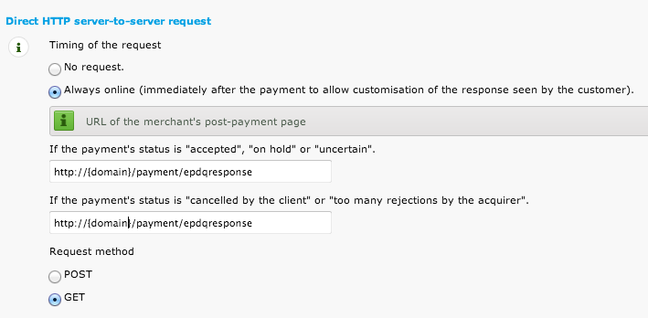
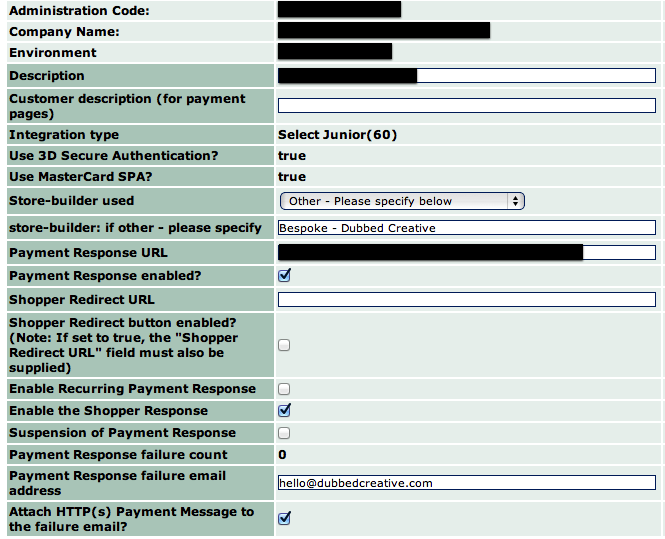
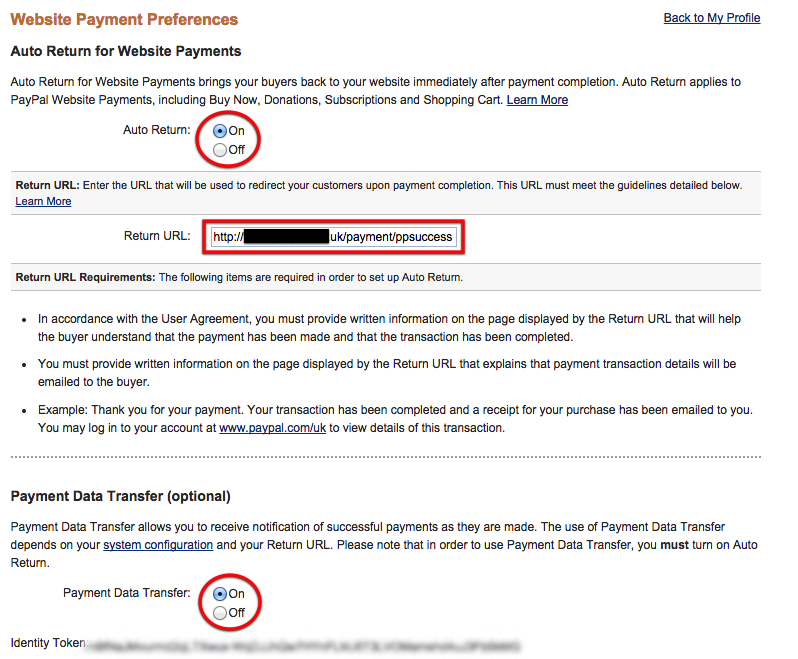

Shopit Developer Documentation
Installation
A few things to get you started...
Getting Started
To install Shopit setup empty database and localhost host and then run http://localhost.dev/install where localhost.dev is the name of your test server/test domain. Follow the installation wizard.
General Development Notes
All editable templates are available in the store/views folder. Any images, stylesheets and script files should be saved to the another folder, e.g. site within the root of the site.
Htaccess Files
The recommended version of the htaccess file is as shown below. If you find that the homepage is displaying for every page, change the $config['uri_protocol'] to AUTO in the store/config/config.php file.
<IfModule mod_rewrite.c>
RewriteEngine On
RewriteBase /
# Redirect to www
RewriteCond %{HTTP_HOST} !^www\.
RewriteRule ^(.*)$ http://www.%{HTTP_HOST}/$1 [R=301,L]
# Check to see if this is a call to image auto-resize function
RewriteCond %{REQUEST_URI} ^/image/*
RewriteRule . /index.php/$1 [L]
# Checks to see if the user is attempting to access a valid file,
# such as an image or css document, if this isn't true it sends the
# request to index.php
RewriteCond %{REQUEST_FILENAME} !-f
RewriteCond %{REQUEST_FILENAME} !-d
RewriteRule . /index.php/$1 [L]
</IfModule>
<IfModule !mod_rewrite.c>
# If we don't have mod_rewrite installed, all 404's
# can be sent to index.php, and everything works as normal.
ErrorDocument 404 /index.php
</IfModule>
If still no success, try another flavour!
CRON Jobs
Shopit has various cron jobs that can be setup to automate certain tasks.
Google XML Feeds
This one should be setup as a priority to run daily at 11pm. Use the following line in cpanel's cron jobs setting.
wget -q http://{www.domain.com}/admin/index.php/cron/googlise
Core Templates
Global templates define the general look and structure of the site and aim to maintain consistency throughout the stores design.
All global templates are located in store/views/global.
Global Templates
- header.php
- footer.php
- sidebar.php
- store.php - this template usually pulls all three of the above files together
- home.php - used for the layout of the homepage
- document.php
- cart.php - this template is used only on basket and checkout pages
Payment Gateway Templates
Templates for selected payment gateways can be found in store/views/gateway. These can all be designed up accordingly and will sit within the global cart.php template.
Customer Email Template
These templates are available to edit through the Shopit Admin under Status Notifications.
Template Overrides
Needs documenting...
Global Variables
Global variables are available throughout the Shopit app template files.
General Template Variables
shopit:header
Outputs the contents of the header.php template.
shopit:footer
Outputs the contents of the footer.php template.
shopit:sidebar
Outputs the contents of the sidebar.php template. This template does not always need to be used depending on the store's design.
shopit:content
Outputs the appropriate template depending on the page being viewed.
shopit:breadcrumb
Displays the current breadcrumb trail. This tag is available on all category and product pages. Contents of the trail are in the boxes/breadcrumb.php template file.
There are three tags available within this template, and usually displayed in this order:
breadcrumb_parents deprecatedbreadcrumb_child deprecatedbreadcrumb_product deprecated- breadcrumb - outputs a complete unordered list.
shopit:search
Displays the contents of the search box template which is located in boxes/search-box.php.
shopit:mybasket
Displays the contents of the my basket template which is located at boxes/basket.php.
Available variables are:
- itemtotal - displays total number of items appended with the words "items".
- itemtotal_int - displays only the number of items as an integer.
- baskettotal - displays the total price of the basket including VAT and formatted with the currency symbol.
- baskettotal_exvat - as above, but with VAT excluded.
shopit:categories
Creates a nested list (without ul or ol tags) of all parent and sub-categories.
shopit:pages
Creates a list of cms pages without the enclosing ul or ol tags.
Store Information Variables
store:name
Name of the store e.g. Ability Superstore.
store:company
The parent company name e.g. Specialist Mobility Ltd.
Other available variables are listed below and are also available through the config_item() and $this->config->item() methods.
- store:tel
- store:fax
- store:email
- store:address - outputs address as a single line.
- store:reg - company registration details.
- store:currency - displays the currency symbol, e.g. £
- store:vat_rate - decimal value e.g. 0.2.
- site_url - the full url of the store. Outputs as a
http address.
- base_url - the full url of the store. Automatically checks the current url for
http or https and returns accordingly.
currency
Displays the currency symbol as set in the store's configuration.
site_url
Outputs the URL of the website including http.
base_url
Outputs the URL of the website with either http or https depending on the currently viewed page. This is suitable when needing to switch between the http protocols.
current_url
Outputs the URL of the current page.
page_type
Defines the type of page currently being displayed. Available types are home, collection, tag, search, brand, basket, checkout, categories, category or product.
Meta/SEO Variables
page_title
Displays the page title - usually used for the browser's title bar.
meta_description
Outputs the pre-filled meta description tag for the <head> section.
meta_keywords
Outputs the pre-filled meta keywords tag for the <head> section.
meta_custom
Outputs any custom meta tags for the <head> section.
canonical_url
Outputs the current url with query string parameters removed.
canonical_url_mobile
As above tag, but switches urls from www. to m. and vice-versa.
Module Related Variables
shopit:myaccount:links
Displays the links to the My Account area if the module is installed.
shopit:myaccount:logged_in
Returns boolean true when user is logged in to My Account and false when not.
Conditional Global Variables
Simple Conditionals
A conditional is considered “simple” if it is evaluating variables that are already available by the time the template parsing engine reaches the simple conditionals parsing stage. The expression evaluates a single variable (i.e. contains no logical operators such as OR, AND) and may use the else control structure. A simple conditional may look like this:
{if {total_products} > 0}
<h2>Products</h2>
{else}
<h2>Sorry, no products in this category</h2>
{/if}
Homepage Template
The following variables apply to the homepage template.
Template located at store/views/content/homepage.php.
Featured Product Variables
Before featured products can be displayed on the homepage, the product loop {item} must be declared as below. The featured products are pulled via the 'featured products' collection in the admin or if this is empty then the latest recently added items are shown.
{item}
//Add the product tags/variables from the list below within this loop...
{/item}
product_count
Outputs and incremental count per product. So item 1 is 1, 2 is 2, 5 would be 5, etc.
product_id
The database id of the product.
cat_id
The category id the product belongs to.
product_type
The type of product. This can either be single or variation. The latter indicates this item has variations attached to it (parent/child).
product_name
The title of the parent product.
product_description
Fully formatted product description.
product_excerpt
Fully formatted product excerpt. This field is treated like a secondary content area.
product_summary
Outputs the first paragraph of the product description.
product_brand
The brand or manufacturer of the product.
product_brand_slug
The url friendly version of the brand. This is useful to create links to brand pages.
product_price
The product's price, including VAT, formatted with currency symbol and decimal values. When this is used on a item with variations, the lowest priced variation will be output. Sale price is output instead of the product price when applicable. The tag/variable outputs with base_rate setting applied.
product_price_exvat
The product price, excluding VAT, formatted with currency symbol and decimal values. The tag/variable outputs with base_rate setting applied.
product_saleprice
The product sale/discounted price formatted with currency symbol and decimal values. Includes VAT. The base_rate setting is not applied to this field.
product_saleprice_exvat
The product sale/discounted price, excluding VAT, formatted with currency symbol and decimal values.
max_price
The product's maximum price, including VAT, formatted with currency symbol and decimal values. When this is used on a item with variations, the highest priced variation will be output (takes sale prices in to account). The tag/variable outputs with base_rate setting applied.
max_price_exvat
As max_price, but excluding VAT. The tag/variable outputs with base_rate setting applied.
product_price_range
Displays the price in the format £10.00 - £50.00. Includes VAT and currency symbols.
product_price_range_exvat
As product_price_range, but excluding VAT.
get_product_price
Outputs the product price as set in the database (sales price is not factored in). Includes VAT and is formatted with currency symbol and decimal values. The tag/variable outputs with base_rate setting applied.
get_product_price_exvat
As get_product_price, but excluding VAT. The tag/variable outputs with base_rate setting applied.
css_classes
Outputs a set of product related css classes - useful for development. Outputted classes are product-[integer], productid-[integer], product-brand, sale-item (if product is on sale), product-type ("single" or "variation").
url
Provides the full url to the product page.
product_image
The product thumbnail resized according to the store's configuration.
product_code
The SKU of the product.
custom:data
Custom data fields can be displayed within the product template if they are enabled in the admin. Tags should be in the format {custom:custom_field_label} - the tags can also be found in the Custom Fields section of the Shopit admin.
Category Template
These variables are available for categories, collections, tags, brands and search result pages.
Template: content/products.php
Category Variables
cat_name
The name of the current category page being viewed.
cat_id
The database category ID of the current category page being viewed.
cat_desc
HTML formatted category description
cat_excerpt
HTML formatted category excerpt. This field is used as a secondary content area.
cat_url
The full url of the current category page.
cat_image
Displays the category image if available with <img> tag. This only outputs if the categoryicons module is installed.
cat_image_file
The filename of the category image without the <img> tag. Useful for custom coding. This only outputs if the categoryicons module is installed.
total_products
The total number of products found in the current category.
showing
Displays the number of currently viewed items e.g. 12-24. Used with the above tag could produce text like "showing 1-12 of 100 items".
message
Displays a default message when there are no products within the selected category.
shopit:sort_options
Includes the boxes/search-sort.php template which includes the results sorting options i.e. products per page, sort by price, etc. The pagination tag can also be included within the template. See below for available variables.
shopit:layers
Includes the boxes/layers.php template which is used for product filtering (layered navigation) - see below for available variables.
pagination
Outputs the pagination list. More config settings can be found in store/config/pagination.php.
Additional Collection Variables
The following additional variables are available for collection pages.
collection_id
The database collection ID of the current collection page being viewed.
collection_group
The group the current collection page belongs to.
Product Variables
Before products can be displayed on any type of category page (including collections, search results, brands and tags), the {item}{/item} product loop must be declared as follows:
{item}
//Add the product tags/variables from the list below within this loop...
{/item}
product_count
Outputs and incremental count per product. So item 1 is 1, 2 is 2, 5 would be 5, etc. This counter is affected by pagination, so the first product on page five would be 1.
product_id
The database id of the product.
cat_id
The category id the product belongs to.
product_type
The type of product. This can either be single or variation. The latter indicates this item has variations attached to it (parent/child).
product_name
The title of the parent product.
product_code
The SKU of the product.
product_description
Fully formatted product description.
product_excerpt
Fully formatted product excerpt. This field is treated like a secondary content area.
product_summary
Outputs the first paragraph of the product description. All HTML tags removed (including paragraphs).
product_brand
The brand or manufacturer of the product.
product_brand_slug
The url friendly version of the brand. This is useful to create links to brand pages.
product_price
The product's price, including VAT, formatted with currency symbol and decimal values. When this is used on a item with variations, the lowest priced variation will be output. Sale price is output instead of the product price when applicable. The tag/variable outputs with base_rate setting applied.
product_price_exvat
The product price, excluding VAT, formatted with currency symbol and decimal values. The tag/variable outputs with base_rate setting applied.
product_saleprice
The product sale/discounted price formatted with currency symbol and decimal values. Includes VAT. The base_rate setting is not applied to this field.
product_saleprice_exvat
The product sale/discounted price, excluding VAT, formatted with currency symbol and decimal values.
max_price
The product's maximum price, including VAT, formatted with currency symbol and decimal values. When this is used on a item with variations, the highest priced variation will be output (takes sale prices in to account). The tag/variable outputs with base_rate setting applied.
max_price_exvat
As max_price, but excluding VAT. The tag/variable outputs with base_rate setting applied.
product_price_range
Displays the price in the format £10.00 - £50.00. Includes VAT and currency symbols.
product_price_range_exvat
As product_price_range, but excluding VAT.
get_product_price
Outputs the product price as set in the database (sales price is not factored in). Includes VAT and is formatted with currency symbol and decimal values. The tag/variable outputs with base_rate setting applied.
get_product_price_exvat
As get_product_price, but excluding VAT. The tag/variable outputs with base_rate setting applied.
css_classes
Outputs a set of product related css classes - useful for development. Outputted classes are product-[integer], productid-[integer], product-brand, sale-item (if product is on sale), product-type ("single" or "variation").
url
Provides the full url to the product page.
product_image
The product thumbnail resized according to the store's configuration.
custom:data
Deprecated Custom data fields can be displayed within the product template if they are enabled in the admin. Tags should be in the format {custom:custom_field_label} - the tags can also be found in the Custom Fields section of the Shopit admin.
Use get_custom_field() core library function instead.
Results Sorting Per Page
The template for these two features resides at store/views/boxes/sort.php. Sorting produces a list* of sorting options such as by product name, best sellers, price, etc. Per page provides a list of available options to change the number of items that are displayed on a single category page. It both cases the loop must be declared as displayed in the example below.
* The selected sorting option is always moved to the top of the list.
<ul>
<li><strong>Sort By:</strong>
{results_sort}
<li class="{results_sort_css_classes}"><a href="{results_sort_url}" rel="noindex">{results_sort_label}</a></li>
{/results_sort}
</ul>
<ul>
<li><strong>Per Page:</strong></li>
{results_perpage}
<li class="{results_perpage_css_classes}"><a href="{results_perpage_url}" rel="noindex">{results_perpage_label}</a></li>
{/results_perpage}
</ul>
Available tags are as follows:
- results_sort_css_classes - A list of css classes relating to the option.
- results_sort_url - The url for the option to to be applied.
- results_sort_label - The option's label
- results_perpage_css_classes - A list of css classes relating to the option.
- results_perpage_url - The url for the option to to be applied.
- results_perpage_label - The option's label
Layered Navigation (Filters)
These variables only apply if the filter module is installed and only applies to category pages.
The template resides at store/views/boxes/layers.php.
Available Filters
Before filters can be displayed on category pages the {layers}{/layers} loop must be declared as follows:
{layers}
//Add the tags/variables from the list below within this loop...
{/layers}
group_label
The label for the current layers/filters group.
group_type
The type of group this set is. This would be either a list or swatches.
group_empty
Defines whether the group is empty of filters or not. Returns true or false (as strings, not boolean).
layer
Variable pair to display filters within this group. The following variables are available:
- field_name - The name of the database field which should be applied to any inputs.
- field_val - The value of the database field which should be applied to any inputs. This will always be 1.
- label - The name of the filter option.
- swatch - HTML snippet to display the filter's colour option.
- colour - HEX colour code of filter if applicable.
- url - The URL to apply the filter to the current product set.
- css_classes - A set of css classes relating to this filter option and group.
- product_count - Number of products to which this filter applies.
- field_html - The complete HTML to display this filter option. Using this tag is highly recommended as it creates everything that is required.
Active Filters (Selected)
Before active filters can be displayed on category pages the loop {layers_selected} must be declared as follows:
{layers_selected}
//Add the tags/variables from the list below within this loop...
{/layers_selected}
selected_group
The name of the group to which this filter belongs e.g. Colour.
selected_layer
The name of the active filter e.g. Red.
selected_url
Creates the necessary HTML to allow the option to be removed from the list of active filters.
Sample Code
The following code is an example of how to display layered navigation on the category pages.
<ul>
{layers_selected}
<li><strong>{selected_group}{if {selected_group} != 'Active Filters'}:{/if}</strong> {selected_layer} {selected_url}</li>
{/layers_selected}
</ul>
{layers}
{if {group_empty} == 'false'}
<fieldset>
<legend>{group_label}</legend>
<ul>
{layer}
{field_html}
{/layer}
</ul>
</fieldset>
{/if}
{/layers}
Product Template
There are two templates that display product information:
single.php - Used when the product is a single item and has no variations.variation.php - Used when a product has variations. This template outputs the product variations (see available tags below).
Product Variables
product_id
The database id of the product. This is the same as the final url segment.
product_type
The type of product. This can either be single or variation. The latter indicates this item has variations attached to it (parent/child).
product_name
Displays the name of the product.
product_desc
HTML formatted description of the product.
product_excerpt
HTML formatted excerpt that is usually used as a secondary content area.
product_tags
Lists the product tags (as links) as assigned to the item in the admin. Tags: is prefixed to the output.
product_attributes
Outputs an unordered list of attributes relating to the product.
product_condition
Condition of the product - usually "used" or "new".
product_file
Link to any attached file (pdf, doc or xls).
product_qty
Product's stock level as an integer.
product_stock_level
Displays the current stock level in the format In stock: 100 or Out of stock if no quantity remains. On products with variations, this tag is empty.
product_brand
The brand or manufacturer of the product.
product_brand_slug
The url friendly version of the brand. This is useful to create links to brand pages.
product_rrp
The product's price as set in the admin including VAT. Formatted with currency and decimal values.
product_rrp_exvat
As product_rrp but excluding VAT.
product_price
The product's price, including VAT, formatted with currency symbol and decimal values. When this is used on a item with variations, the lowest priced variation will be output. Sale price is output instead of the product price when applicable. The tag/variable outputs with base_rate setting applied.
product_price_exvat
The product price, excluding VAT, formatted with currency symbol and decimal values. The tag/variable outputs with base_rate setting applied.
product_price_dec
As per product_price but excludes the currency symbol.
product_price_exvat_dec
As per product_price_exvat but excluding the currency symbol.
product_saleprice
The product sale/discounted price formatted with currency symbol and decimal values. Includes VAT. The base_rate setting is not applied to this field.
product_saleprice_exvat
The product sale/discounted price, excluding VAT, formatted with currency symbol and decimal values.
product_price_default
Displays the default product price (as per product_price) including VAT and currency character. If this is an item with variations, the price of the first variant is returned. Sale price is not applied.
product_price_default_exvat
As per product_price_default_exvat but excluding VAT. Sale price is not applied.
max_price
The product's maximum price, including VAT, formatted with currency symbol and decimal values. When this is used on a item with variations, the highest priced variation will be output (takes sale prices in to account). The tag/variable outputs with base_rate setting applied.
max_price_exvat
As max_price, but excluding VAT. The tag/variable outputs with base_rate setting applied.
product_price_range
Displays the price in the format £10.00 - £50.00. Includes VAT and currency symbols.
product_price_range_exvat
As product_price_range, but excluding VAT.
get_product_price
Outputs the product price as set in the database (sales price is not factored in). Includes VAT and is formatted with currency symbol and decimal values. The tag/variable outputs with base_rate setting applied.
get_product_price_exvat
As get_product_price, but excluding VAT. The tag/variable outputs with base_rate setting applied.
product_delivery
Delivery price for the item including VAT. Defaults to UK shipping.
product_delivery_exvat
As per product_delivery, but excluding VAT.
qty_select
Produces either a dropdown with available quantities or an text input depending on the store's configuration.
product_code
The items product code or SKU.
product_ean, product_mpn, product_upc
These tags contain additional product identifiers. If empty, they output null. If this is a product with variations, these tags are available within the {variations} loop.
product_weight
The weight of the product in kgs.
product_image
Outputs the first product image. Dimensions depend upon the store's configuration.
product_image_default
Returns the url of the default product image. If no image is assigned, null is returned.
product_image_fullsize
Returns the url to the full size default product image. If no image is set, null is returned.
product_gallery
Displays thumbnails of all the available product images. The code generated by this tag is made to work with the built-in lightbox.
product_disabled
Outputs boolean true or false.
product_views
The number of product page hits.
btn_addtobasket
Is boolean true or false.
product_buybtn
For single items only. Outputs the buy now button complete with the necessary hidden fields. It is important to note that this tag does not generate the necessary form tag or quantity input, so these would need to be added seperately. A complete example of the code is displayed below. The button label/value can be changed via language/english/core_lang.php.
<form method="post" action="<?=site_url('basket/additem');?>">
{product_options}
<fieldset class="product_option_group">
<legend>{option_group}</legend>
{option}
<label>
<input type="radio" name="product_option[{option_number}]" value="{option_id}" {option_checked} />
{option_label} (+{option_price}, {option_price_exvat} ex VAT)
</label><br/>
{/option}
</fieldset>
{/product_options}
{qty_select}
{product_buybtn}
</form>
custom:data
Custom data fields can be displayed within the product template if they are enabled in the admin. Tags should be in the format {custom:custom_field_label} - the tags can also be found in the Custom Fields section of the Shopit admin.
It's useful to note that these tags can also be used within the product description and product excerpt within the editor (admin).
Related Item Variables
shopit:extra_items
Outputs the boxes/extraitems.php template with similar items. Available variables are listed below and must be wrapped within the {extraitems}{/extraitems} loop:
- item_count - Outputs an incremental count per product. So item 1 is 1, 2 is 2, 5 would be 5, etc.
- item_type - The type of product. This can either be
single or variation. The latter indicates this item has variations attached to it (parent/child).
- item_url - The url to the items product page.
- item_name - The name of the product.
- item_price - The product's price, including VAT, formatted with currency symbol and decimal values. When this is used on a item with variations, the lowest priced variation will be output. Sale price is output instead of the product price when applicable. The tag/variable outputs with base_rate setting applied.
- item_price_exvat - The product price, excluding VAT, formatted with currency symbol and decimal values. The tag/variable outputs with base_rate setting applied.
- item_max_price - The product's maximum price, including VAT, formatted with currency symbol and decimal values. When this is used on a item with variations, the highest priced variation will be output (takes sale prices in to account). The tag/variable outputs with base_rate setting applied.
- item_max_price_exvat - As item_max_price, but excluding VAT. The tag/variable outputs with base_rate setting applied.
- item_price_range - Displays the price in the format £10.00 - £50.00. Includes VAT and currency symbols.
- item_price_range_exvat - As product_price_range, but excluding VAT.
- item_brand - The brand or manufacturer of the product.
- item_brand_slug - The url friendly version of the brand. This is useful to create links to brand pages.
- item_product_id - The database ID of the product.
- item_description - Fully formatted product description.
- item_excerpt - Fully formatted product excerpt. This field is treated like a secondary content area.
- item_summary - Outputs the first paragraph of the product description. All HTML tags removed (including paragraphs).
- custom_data - Semi-colon seperated list of custom data fields.
- css_classes - Outputs a set of product related css classes - useful for development. Outputted classes are
product-[integer], productid-[integer], product-brand, sale-item (if product is on sale), product-type ("single" or "variation").
shopit:related_items
Outputs the boxes/relateditems.php template with related items. Available variables are as above and must be wrapped within the {relateditems}{/relateditems} loop
Special Offers
shopit:specialoffers
Outputs special offers for this product.
Product Variations
Variations are applied to parent items and can be displayed as a table or dropdowns - however you see fit.
variations
Variable pair (loop) to display product variations. It is important to note that the buy button contains the required hidden input containing the product id. It is this ID that is passed to the basket.
Tags available within this loop are:
- variant_count - Incremental counter for each variation.
- variant_id - The database ID of the variation.
- variant_product_image - Outputs the image of the variant. The
<img> tag is automatically generated to work with the built-in lightbox. Thumbnails are are sized according to the stores config setting.
- variant_product_image_default - Returns the url of the default product image. If no image is assigned,
null is returned.
- variant_product_image_fullsize - Returns the url to the full size default product image. If no image is set,
null is returned.
- variant_product_name - Variation's name as set in the admin.
- variant_product_code - Product code for this variation.
- variant_product_ean
- variant_product_mpn
- variant_product_upc
- variant_product_rrp - The product price as set in the database. Not the sale price. Includes VAT and currency symbol.
- variant_product_rrp_exvat - As above, but excluding VAT.
- variant_product_price - The product or sale price including VAT and currency symbol. You would use this to display the variation's price.
- variant_product_price_exvat - As above, but excluding VAT.
- variant_product_price_dec - As per variant_product_price but excluding the currency symbol.
- variant_product_price_exvat_dec - As per variant_product_price_exvat but excluding the currency symbol.
- variant_product_saleprice - The product sale price as set in the database. Includes VAT and currency symbol. Defaults to £0.00 if not sale price is not set.
- variant_product_saleprice_exvat - As above, but excluding VAT.
- variant_product_options - Variable pair to display any product options attached to this variation. See product_options section below for details of available tags.
- variant_stock_level - Displays the current stock level as an integer or "Out of stock" if 0.
- variant_qty_select - Produces a select dropdown with available quantities or a text input.
- variant_qty - Stock level for this variation as an integer.
- variant_buybtn - Generates the buy button together with the necessary hidden fields (product_id). The button label/value can be changed via
language/english/core_lang.php.
- variant_custom:custom_field_label - Custom field data assigned to this variation. A list of tags can be found in the Custom Fields section of the Shopit admin.
- variant_css_classes - Outputs a set of variant related css classes - useful for development. Outputted classes are
variant-[integer], variantid-[integer], has-variant-attributes.
The following code is an example of how to display them on the product page.
{variations}
<tr>
<form method="post" action="<?=site_url('basket/additem');?>">
<td>{variant_id}</td>
<td align="center">{variant_product_image}</td>
<td>{variant_product_name}</td>
<td>{variant_product_no}</td>
<td>{variant_product_ean}</td>
<td>{variant_product_mpn}</td>
<td>{variant_product_upc}</td>
<td>{variant_product_rrp}</td>
<td>{variant_product_rrp_exvat}</td>
<td>{variant_product_price}</td>
<td>{variant_product_price_exvat}</td>
<td>{variant_product_saleprice}</td>
<td>{variant_product_saleprice_exvat}</td>
<td>
{variant_product_options}
<label>{option_group}</label>
<select name="product_option[{option_number}]">
{option}
<option value="{option_id}">{option_label} (+{option_price}, {option_price_exvat} ex VAT)</option>}
{/option}
</select>
{/variant_product_options}
</td>
<td>{variant_stock_level}</td>
<td>
{variant_qty_select}
{variant_buybtn}
</td>
</form>
</tr>
{/variations}
variation_selector
Produces a dynamically built group of ajax powered dropdowns (an unstyled ul list) which use the variant attributes (per variation) as set up in the Shopit admin. This feature is intended to be used in conjunction with the above variations loop.
Below is an example of some jquery that interacts with the selector.
$('body').on('click', 'ul#shopit-variant-attrs ul li', function(){
// Get the label for the selected option and it's value (radio button)
var $variant_name = $(this).text();
var $variant_value = $(this).find('input').val();
// Update the first listing in the dropdown to show the selected option
$(this).closest('ul').parent('li').find('span').text($variant_name);
// If the value is a number i.e. a product ID then...
if ($.isNumeric($variant_value)) {
// ... We do whatever we need here such as show the add to
// basket button, price etc.
}
// Close the dropdown
$(this).parent('ul').slideUp('fast');
});
Product Options
product_options (single item)
Variable pair to display available product options. This first pair outputs the option groups. Available variables are:
- option_group - The name of the option group, e.g. Size, Colour, etc.
Within this variable pair is the {option}{/option} pair. Available variables are:
- option_number - The number of the option with the group, e.g. 1, 2, 3. Resets for the next group.
- option_id - Database ID for the product option.
- option_checked - Outputs
checked='checked' to pre-select the radio buttons. If a select dropdown is used, this isn't needed as the dropdown should default to the first item in it's list.
- option_label - The value of the option, e.g. if this group is colour then this could be red.
- option_price - The additional value of the product option e.g. £5.00. Value is displayed including VAT with currency symbol.
- option_price_exvat - As per option_price but excluding VAT.
An example of how the finished code might look:
{product_options}
<fieldset class="product_option_group">
<legend>{option_group}</legend>
{option}
<label>
<input type="radio" name="product_option[{option_number}]" value="{option_id}" {option_checked} />
{option_label} (+{option_price}, {option_price_exvat} ex VAT)
</label>
{/option}
</fieldset>
{/product_options}
variant_product_options (item with variations)
This tag must appear within the {variations} loop - see above.
Variable pair to display available product options. This first pair outputs the option groups. Available variables are:
- option_group - The name of the option group, e.g. Size, Colour, etc.
Within this variable pair is the {option}{/option} pair. Available variables are:
- option_number - The number of the option with the group, e.g. 1, 2, 3. Resets for the next group.
- option_id - Database ID for the product option.
- option_checked - Outputs
checked='checked' to pre-select the radio buttons. If a select dropdown is used, this isn't needed as the dropdown should default to the first item in it's list.
- option_label - The value of the option, e.g. if this group is colour then this could be red.
- option_price - The additional value of the product option e.g. £5.00. Value is displayed including VAT with currency symbol.
- option_price_exvat - As per option_price but excluding VAT.
An example of how the finished code might look:
{variant_product_options}
<label>{option_group}</label>
<select name="product_option[{option_number}]">
{option}
<option value="{option_id}">{option_label} (+{option_price}, {option_price_exvat} ex VAT)</option>}
{/option}
</select>
{/variant_product_options}
Basket Template
The basket is built up of two core templates plus an optional one for the checkout page in the event you want a different design for that page.
The templates reside in the store/views/cart folder.
- basket.php - Contains the customers basket/summary
- customerdetails.php - The form containing the billing and delivery address details. In most cases, this will not need to be altered.
- checkout.php - If this file exists in the above location, it will be called on the checkout page. All variables are available as normal.
The variables listed below are solely used within the basket.php and/or checkout.php template.
Basket Item Variables
To list the customer's basket summary, the basket loop {basket}{/basket} must be declared as follows:
{basket}
//Add the basket variables from the list below within this loop...
{/basket}
product_id
The item's product ID as set in the database.
product_remove_link
A url that can be used to remove an item from the basket.
product_url
Produces a url to link back to the product page.
product_image
Generates a thumbnail of the product complete with <img> tag. Dimensions are currently set via the site's configuration.
product_image_link
Outputs the image url using the built-in resizer e.g. http://store.domain.co.uk/image/resize/my-image.jpg. The dimensions required can be appended to the url in the form /width/height.
product_name
The title of the product. If this is a variation the parent product name is prepended.
product_no
The product code. If this is a variation, it's product code will be displayed instead.
product_offer
Displays the offer label as set in the Shopit admin.
product_stock_level
Outputs the current stock level as an integer. The quantity of the current item is not removed from this value.
product_qty
Returns the quantity added to basket by the customer.
product_qty_select
Produces either a dropdown with available quantities or an text input depending on the store's configuration.
product_price
The price of the product including VAT and currency symbol.
product_price_exvat
As product_price, but excluding VAT.
product_saleprice
The product sale/discounted price formatted with currency symbol. Includes VAT.
product_saleprice_exvat
As product_saleprice, but excluding VAT.
product_linetotal
The total price of the line items i.e. product_price multiplied by the item quantity. Is formatted with the currency symbol and excludes VAT.
parent_id
The database product ID of the parent item - if this is a variation in the basket.
parent_name
The product name of the parent item - if this is a variation in the basket.
parent_slug
The url friendly version of the parent's product name - if this is a variation in the basket.
product_options
A variable pair to output this basket item's options if any. The following variables are available within the loop:
- option_no - an incremental number for the option, e.g. 1, 2, 3.
- option_label - e.g. Size, Colour, etc.
- option_value - e.g. Small, Blue, etc.
- option_delimiter - produces a comma separator if the options are displayed as a list.
An example of the code:
{product_options}
{option_no}. {option_label}: {option_value}{option_delimiter}
{/product_options}
Basket Total Variables
sub_total
The sub total of the line items including VAT. Formatted with currency character.
sub_total_exvat
As per sub_total but excluding VAT.
discount
Outputs the discount if any.
shipping_calc
A variable pair to display shipping/delivery country options. The following variables are available within the loop:
- shipping_country_name - Country name.
- is_shipping_default - produces
selected='selected' for use on select dropdowns.
The select form field must be named (with both name and id attributes) ShippingCalc. Here's an example of how the code should look:
<select name="ShippingCalc" id="ShippingCalc" class="basket-dropdown">
{shipping_calc}
<option value="{shipping_country_name}"{is_shipping_default}>{shipping_country_name}</option>
{/shipping_calc}
</select>
shipping
Produces the delivery options for the country selected through the {shipping_calc} variable.
tax
Outputs the total tax payable.
total
Outputs the payable total of this customer's basket including VAT and shipping. Returns a currency formatted value.
link_to_terms
A url to the terms and conditions page.
to_pay
Outputs the payable total of this customer's basket including VAT and shipping. Returns a currency formatted value.
payment_options
Outputs the form fields for the payment gateways as set in the store's configuration.
Required Form Fields & Variables
The following hidden form fields are required for the basket/checkout to operate correctly. Most contain encrypted values.
- shipping_encrypted
- shipping_method
- vat_encrypted
- total_encrypted
- weight_encrypted
- discount_encrypted
The HTML should be as follows:
<input type="hidden" name="shipping" id="shipping" value="{shipping_encrypted}" />
<input type="hidden" name="shipping_method" id="shipping_method" value="{shipping_method}" />
<input type="hidden" name="vat" id="vat" value="{vat_encrypted}" />
<input type="hidden" name="amount" id="amount" value="{total_encrypted}" />
<input type="hidden" name="weight" id="weight" value="{weight_encrypted}" />
<input type="hidden" name="discount" id="discount" value="{discount_encrypted}" />
Module Related Variables
shopit:coupons
Displays the coupon/voucher code form. As this is a form it should be placed outside the basket/checkout form.
shopit:myaccount:login
Displays the customer/my account login box.
Page Template
There are two templates available when creating content specific pages:
global/document.php - should contain HTML for the general design of the page (which usually matches the rest of the website)content/document.php - contains the HTML for the actual content
Page Variables
The following variables are available in the homepage and page templates.
doc_title
The title of the page as defined in the admin. This will automatically be overridden by the custom heading if set.
doc_content
The page's content, formatted in HTML.
page_id
The database id of the page.
page_slug
The URL slug of the page.
Helper Functions & Libraries
core_files(ssl)
Includes the core files used for the Shopit Storefront to operate correctly e.g. jquery, stylesheets, etc. This function should be placed in the <head>.
resize_image(image_file, width, height)
Gets and resizes the passed image file. The image file would be as in the database. Outputs with the <img> tag.
get_product_slug(product_id)
Retrieves the product url for the current passed product ID e.g. category/subcategory/product-title/product-id.
is_selected(value, comparison)
Returns selected="selected" for dropdown pre-selection.
is_checked(value, comparison)
Same as above, but for checkboxes and radio buttons.
body_class()
Outputs the current platform and browser as classes that can be applied to the <body> tag.
is_not_basket()
Returns boolean true if this is not a basket page.
nice_date(date, format)
money(value, decimals=true, rounding=true, output_price_with_vat=true, include_currency=true, force_rounddown=false)
Formats the passed $value into a monetary value with currency symbol. Parameters enable decimals to be displayed, price round down and price including VAT - all true by default.
capitalise(string)
Capitalises every word in the passed string.
uppercase(string)
Uppercase the entire string.
capfirst(string)
Capitalise the first word of the passed string.
cookie_monster(message, link_to_policy, classes, styles, show_continue, hide_message_on_visit)
get_first_paragraph(string)
Returns the first paragraph of the passed string. This function is now available as a product tag on the category, search results, collections, related item templates.
Snippets (Widgets)
The snippet_widget() function below should be used when working with 'widget' type snippets on the store front. It is important to note that template tags in the form {sn_my_snippet} will not output content if the snippet is a widget.
snippet_widget($snippet[array], 'function[string]')
Outputs the contents of the passed function complete with editable boundary. $snippet is the snippet variable e.g. $sn_my_snippet_widget. function (string) is the name of the custom function to call which would typically reside in store/views/functions.php. One parameter must be sent to the custom function which contains the snippet data.
Contact Form
The form() function below creates the necessary form html, messages and validation.
form(fields_array, [optional:]formid, [optional:]input_class, [optional:]confirmation_message)
The array passed to the function should be in the following structure.
$fields = array(
array(
'name' => 'Email', // Name of the field e.g. Email, Message, First Name, etc
'message' => '<strong>email</strong>', // Validation error message
'validation' => 'trim|required', // Validation rules *
'id' => 'txtEmail', // HTML/CSS ID reference
'type' => 'text', // Input type: text|textarea|checkbox|radio
'label' => 'Name: ', // Label for the field
'value' => 'value', // Optional: Fields value (more for radios and checkboxes)
'checked' => 'true or false', // Optional: Sets the checked status for radios and checkboxes
)
// Add next field array here...
);
* For full set of available validation rules, see http://ellislab.com/codeigniter/user-guide/libraries/form_validation.html
A basic sample form is shown below:
// Set the fields
$fields = array(
array(
'name' => 'Name',
'message' => '<strong>name</strong>',
'validation' => 'trim|required',
'id' => 'txtName',
'type' => 'text',
'label' => 'Name: * ',
),
array(
'name' => 'Email',
'message' => '<strong>email</strong>',
'validation' => 'trim|required',
'id' => 'txtEmail',
'type' => 'text',
'label' => 'Email: * ',
),
array(
'name' => 'Subject',
'message' => '<strong>subject</strong>',
'validation' => 'trim|required',
'id' => 'txtSubject',
'type' => 'text',
'label' => 'Subject: * ',
),
array(
'name' => 'Message',
'message' => '<strong>message</strong>',
'validation' => 'trim|required',
'id' => 'txtMessage',
'type' => 'textarea',
'label' => 'Message: * ',
),
);
// Output the form with an HTML ID attribute of 'frmContact'
echo form($fields, 'frmContact');
Core Library Functions
The core library contains a set of available functions that can be used to create custom data calls and displays.
Call any of the functions below using $this->core->function_name($parameters).
get_products(criteria, limit=20, order_by='min_price asc', exclude_product=null)
This function gets a set amount of products based on the passed criteria.
- criteria defines the products you would like to get, for example, if you want all the products that have the brand "Apple" set this parameter as
product_brand="Apple".
- limit is the number of products to return, default is 20.
- order_by sets how you would like the data ordered. Default is by minimum price ascending.
- exclude_product tells the function to exclude the passed
product_id. Leave as null to return it (default)
Returns a PHP array() consisting of most of the variables as listed in the Category Templates section.
get_collection_items($collection_id, $separator="|", $include_field_name=true)
Returns a list of product IDs separated by $separator. $include_field_name will output the IDs prefixed with "product_id=".
get_categories($cat_id)
Returns an (object) array() of categories within the parent $cat_id.
collections_list($collection_group_id=0)
Returns an unordered list of collection links within the passed collection group ID. Pass 0 to return collections that are ungrouped.
dynamic_categories($cat_id, $colour='255,255,255', $size=null, $title_tag='h3', $ignore_cat_image=false)
Outputs an unordered list of immediate child categories for the current category. The URLs of the sub-categories will be based on the current category's URL. The $colour parameter enables shades to be applied to categories where images are not available.
mybasket($thumbnail_size=50, $include_vat=false)
A detailed version of the basket summary that includes the product image, name, quantity and price. Outputs an unordered list or null if empty.
get_cross_sells($product_id, $type, $ignore_type='variant', $thumbnail_size={null or integer})
Outputs an array of related cross-sells. $type is the cross-sell type as defined in the cross-sell groups section of the admin.
get_item($product_id, $size=null)
Returns a single product $product_id as a PHP array() consisting of most of the variables as listed in the Category Templates section. $size specifies the image size as an integer (if set as null, store configuration is used.
get_custom_field($product_id, $field_label, $type='inventory', $return_all=false)
Returns the custom field data for the passed $product_id.
- product_id - Database ID of the product.
- field_label - Name of the custom field to get. This name should match the value in the database and not that which is displayed in the admin (e.g. custom_my-custom-field).
- type - Either 'inventory' or 'orders'. Default is 'inventory'.
- return_all - If
false, function returns only the data/value of the custom field. If set to true, the entire database row is returned as an array().
get_brands()
Returns a php array of brands in ascending order. Array contains product_brand and product_slug.
Web Services
There web services listed below enable Shopit3 data to be passed to third-party websites e.g. WordPress blogs.
An API key must be generated (via the Shopit admin) and set for these web services to work correctly. All web services return JSON formatted data.
Products
This web service returns a list of products based on the lookup type of either brand, tag, keyword or category. The following query string parameters can be passed and must be url encoded:
- key - API key created via the Shopit admin.
- type - The type of product lookup to perform. This can be either
brand, tag, keyword or category. If this is not set, 'keyword' is used by default.
- query - The keywords or phrase to lookup e.g. "optimus prime transformer". Must be url encoded.
- limit - Total number of products to return. If not set, defaults to
10. Maximum of 100 results returned.
- size - Width/height of the product image. If this is not set, it will default to Shopit's config setting.
http://my-shopit-website.com/webservices/products?key=api-key-obtained-from-shopit >>
&type=brand&query=optimus%20prime%20transformer&limit=10&size=150
Payment Gateways
Below are details of actions that need taking in order for compatible gateways to perform correctly.
Payment gateway settings (encryption keys, account numbers, etc) must be entered within store/config/payment_settings.php.
Barclaycard
The following URLs need adding to the server to server request in the ePDQ admin (replace {domain} with the store's URL).

All other settings for this gateway can be found in the stores config.php file.
Test Card Numbers
- VISA - 4111 1111 1111 1111
- Visa 3-D Secure - 4000 0000 0000 0002
- MasterCard - 5399 9999 9999 9999
- VISA - 4111113333333333 (Declined)
- VISA - 4111116666666666 (Exception)
Test Interface
https://mdepayments.epdq.co.uk/ncol/test/backoffice
Error Codes
The error messages on this page explain how to resolve errors displayed on the ePDQ payment screen.
- Incorrect parameter entered - You have not yet entered your PSPID in the VirtueMart payment method settings.
- unknown order/0/r - You have not yet entered the 'URL of the merchant page containing the payment form' setting in your ePDQ control panel.
- unknown order/1/r - The 'URL of the merchant page containing the payment form' setting entered in your ePDQ control panel does not match the actual URL used by visitors to access the final page of your checkout.
- unknown order/0/s - You have not yet entered the SHA-IN passphrase in the VirtueMart payment method settings.
- unknown order/1/s - The SHA-IN passphrase entered in the VirtueMart payment method settings does not match the SHA-IN passphrase configured in your ePDQ account.
- No order number received (on return to the merchant website) - For the ePDQ Control Panel setting on the 'Feedbacks' Tab: 'I would like to receive transaction feedback parameters on the redirection URLs': Select 'Yes' (Checked).
WorldPay
Below is the default configuration (note the checkboxes). The payment response URL can be found in the Shopit admin.

The default payment response url should be <wpdisplay item="MC_callback">.
Test Card Numbers
Resources
PayPal
The PDT settings must be configured via PayPal's web interface. These settings can be found within the profile section on PayPal.
PDT Settings & Token
Below is an example of a default PDT configuration.

Instant Payment Notification (IPN)
As of Shopit 3.1.10, the IPN setting is set automatically and no longer requires configuring within PayPal.